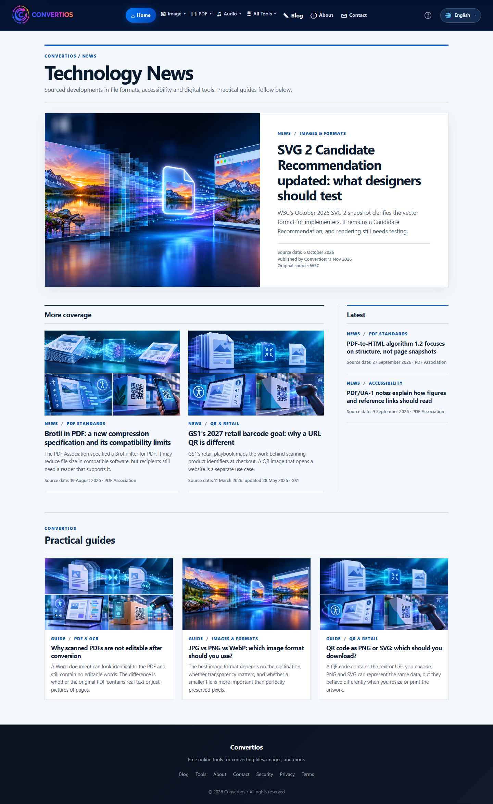

Scroll inside each image to compare the full page. The remaining 52 covers are deliberately unchanged at this checkpoint; their SVGs are still visible further down and on later pages.
Before · Existing PR #290
After · Proposed visual direction
Reference: previous blog on origin/main
Rendered from the verified main-branch source (e69044c9). Its original AI artwork informed this direction. The new sample reuses four suitable original illustrations or their relevant panels.

Local preview only. Automated validation does not replace your visual approval. The full 60-cover rollout remains pending that approval. Every topic will require a premium, relevant AI editorial cover; the sample is not the final delivery.